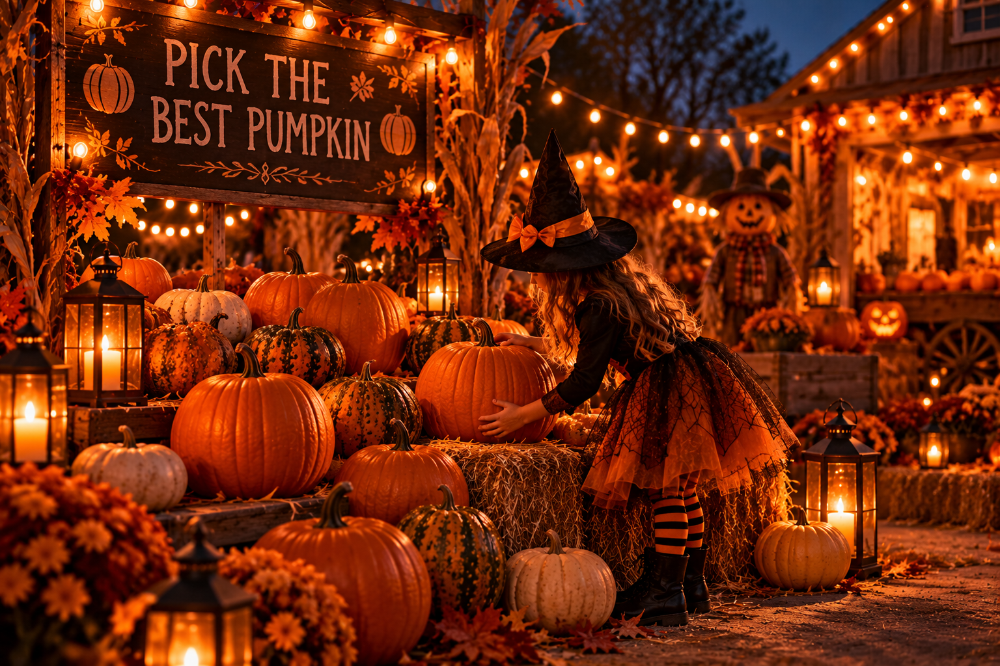
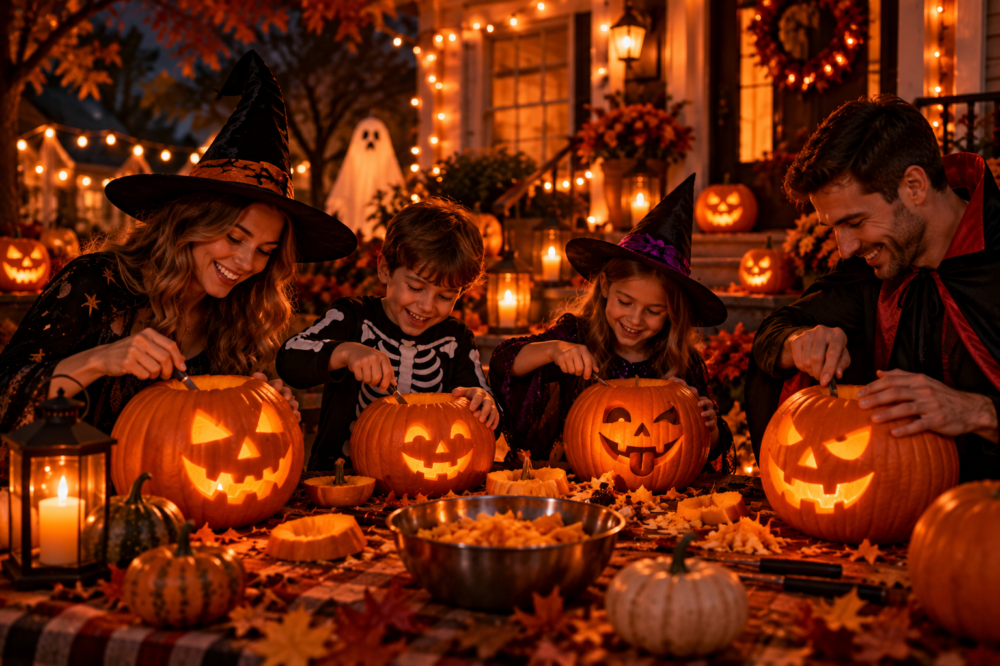
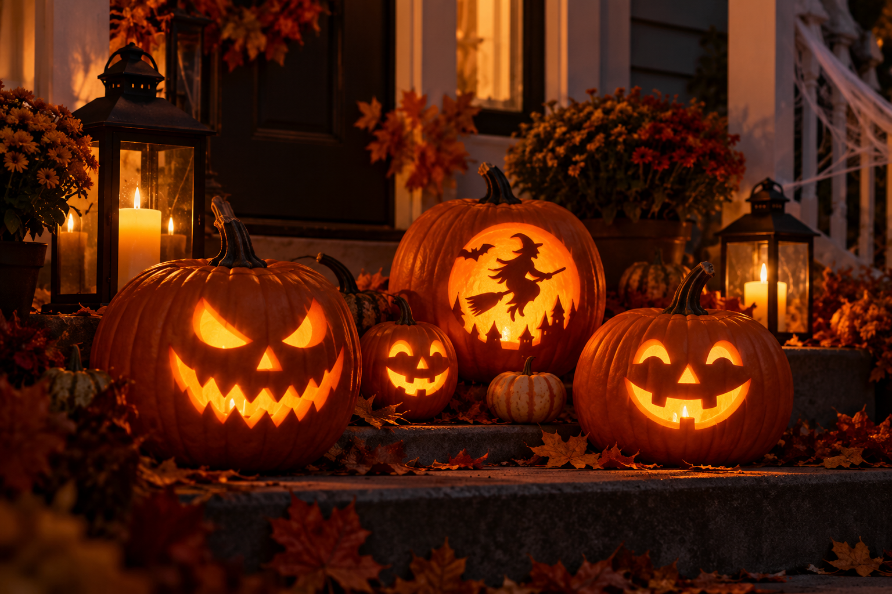
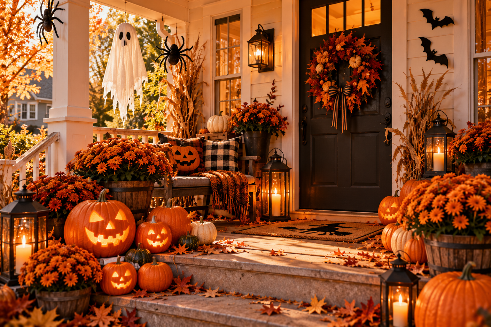
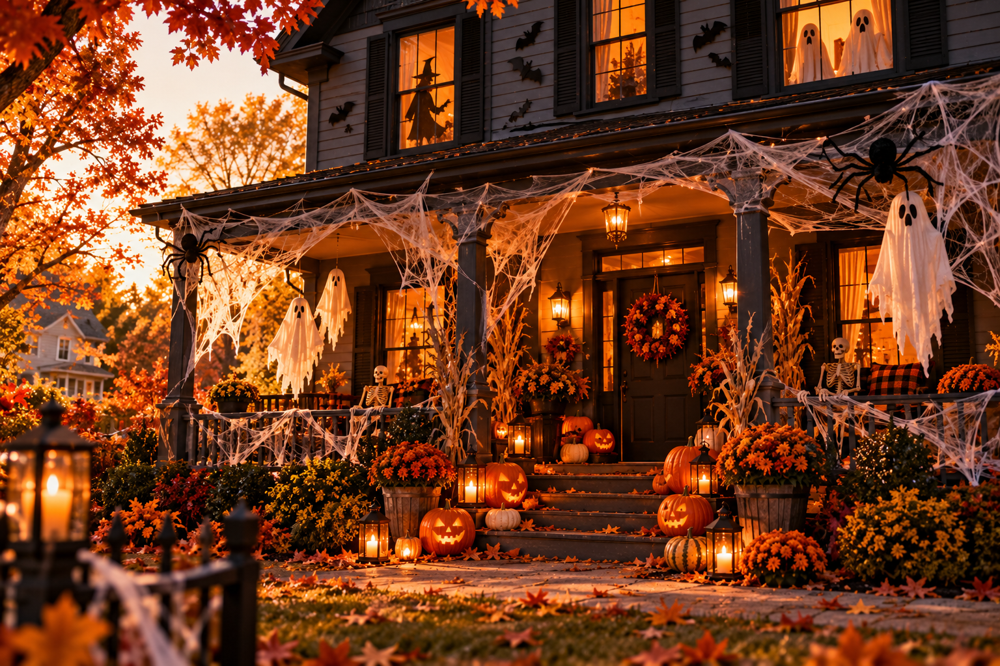
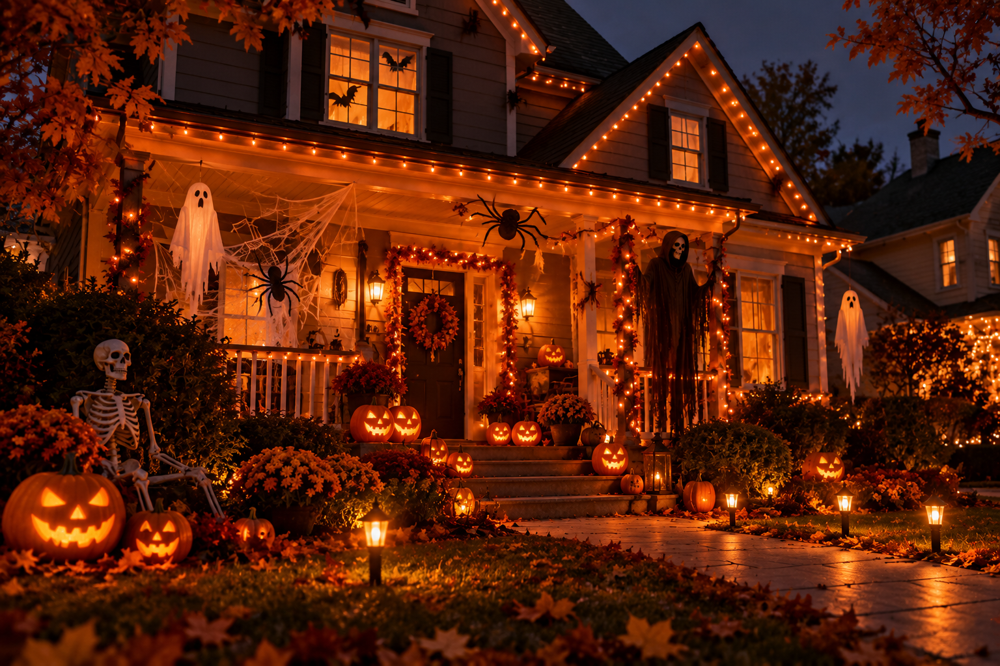
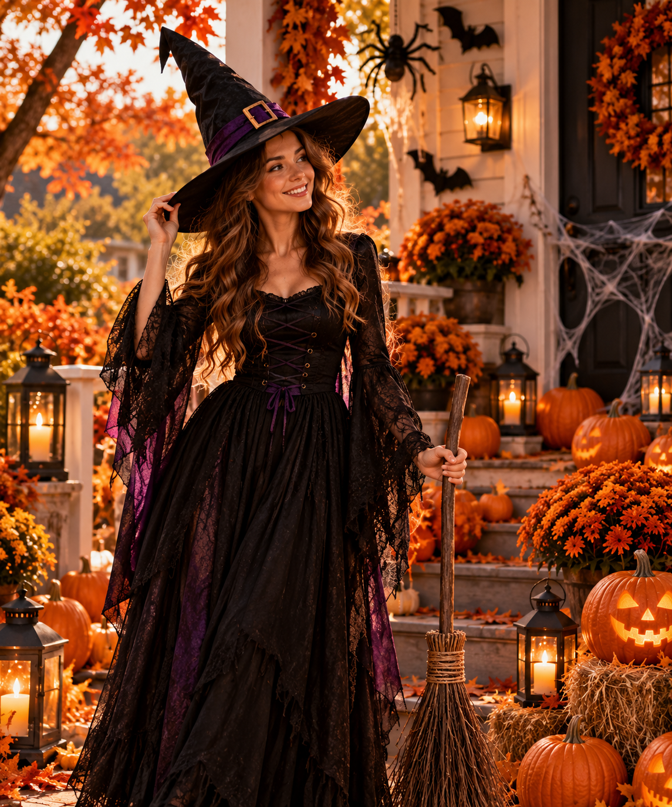
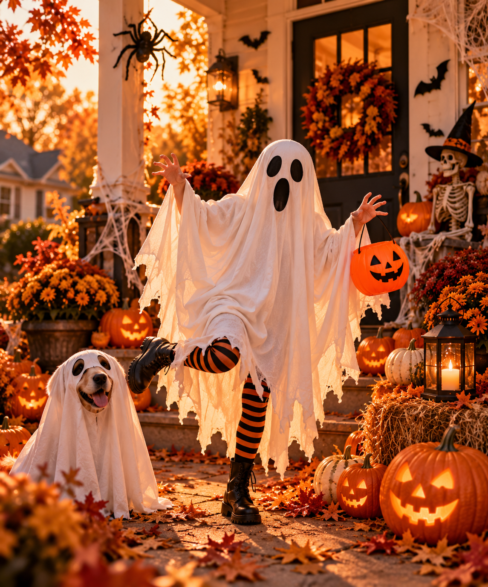
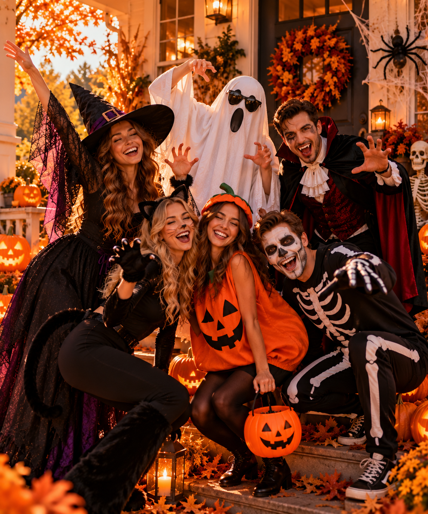

Welcome to Our Halloween Gallery!
Discover Halloween traditions, decorations, and creative costumes through our pictures.
Pumpkin Carving
Carving pumpkins is one of the most popular Halloween traditions. Let's see how it works!



Halloween House Decorations
People decorate their homes with pumpkins, ghosts, spiders, and colorful lights.



Halloween Costumes
Dressing up is one of the best parts of Halloween! People can become witches, ghosts, vampires, or their favorite characters.



Images generated using ChatGPT.